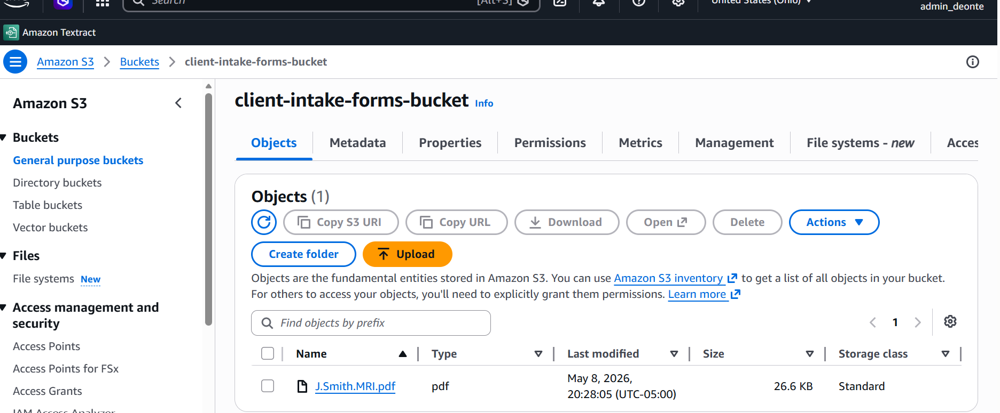
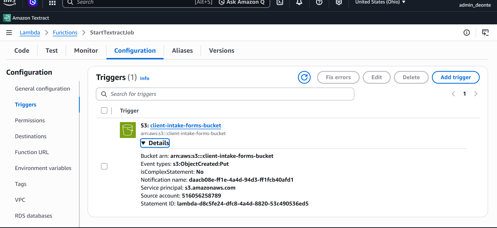
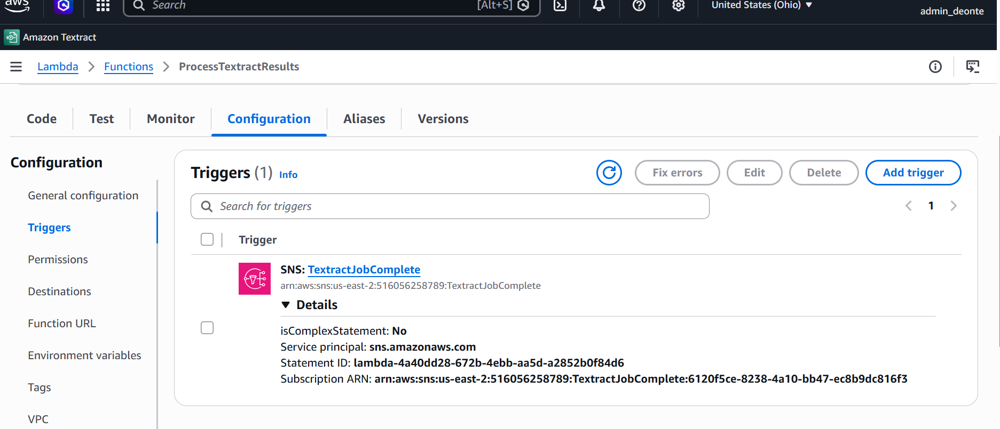
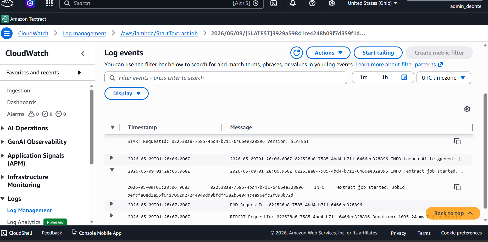
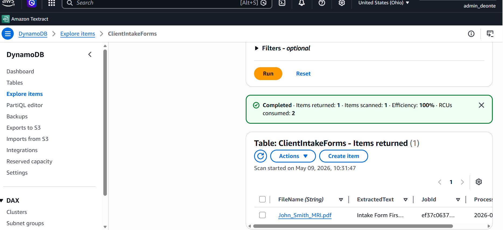
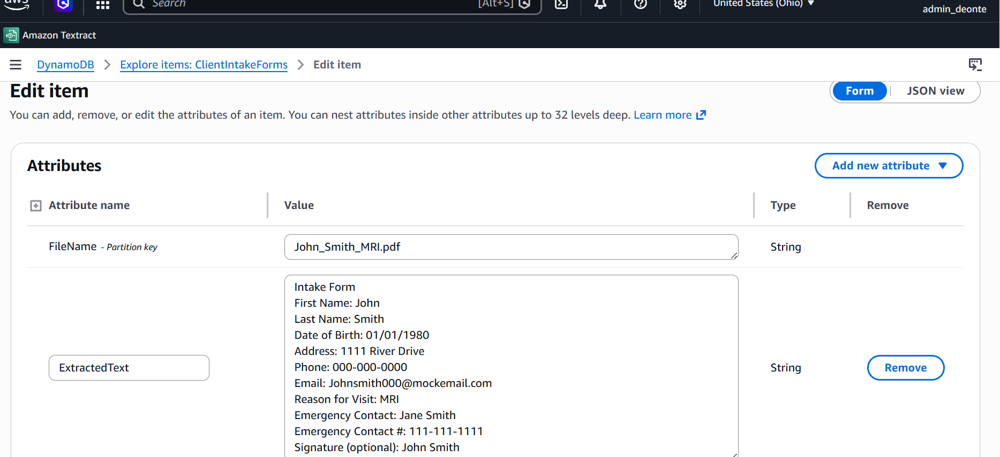

A fully serverless, event-driven document processing pipeline built on AWS. When a PDF is uploaded to S3, the pipeline automatically extracts all text using Amazon Textract and stores the results in DynamoDB, with zero servers to manage, zero polling loops, and near-zero idle cost.
This project demonstrates a fully serverless, event-driven document processing pipeline built on AWS. When a PDF is uploaded to an S3 bucket, the pipeline automatically extracts all text from the document using Amazon Textract and stores the results in DynamoDB, with zero servers to manage, zero polling loops, and near-zero idle cost.
This architecture reflects real-world patterns used in document intake systems, insurance claim processing, healthcare form digitization, and legal document management.
The pipeline is fully event-driven — nothing runs unless something happens. A PDF upload to S3 fires a PUT event that invokes Lambda #1, which starts an asynchronous Textract job and passes the TextractJobComplete SNS topic as its notification destination. When Textract finishes, it publishes a completion message to SNS, which triggers Lambda #2. Lambda #2 paginates through all Textract result blocks using NextToken, then writes the extracted text, Job ID, and timestamp to DynamoDB. Both Lambda functions emit structured logs to dedicated CloudWatch log groups, capturing execution details, Textract Job IDs, extracted line counts, and any errors — providing full observability across the pipeline with zero additional infrastructure.
s3:ObjectCreated:Put event.StartDocumentTextDetection.TextractJobComplete SNS topic.GetDocumentTextDetection and paginates through all result blocks.ClientIntakeForms DynamoDB table.Screenshots from the live AWS environment showing each stage of the pipeline working end-to-end.






StartDocumentTextDetection instead of DetectDocumentText means the pipeline handles multi-page documents and does not time out on large files.NextToken, ensuring no text is missed on long documents.| Resource Type | Name | Purpose |
|---|---|---|
| S3 Bucket | client-intake-forms-bucket | Stores uploaded PDFs — entry point of the pipeline |
| Lambda Function | StartTextractJob | Triggered by S3 PUT; starts async Textract job |
| Lambda Function | ProcessTextractResults | Triggered by SNS; retrieves results and writes to DynamoDB |
| SNS Topic | TextractJobComplete | Notifies Lambda #2 when Textract finishes |
| DynamoDB Table | ClientIntakeForms | Stores extracted text keyed by file name |
| IAM Role | LambdaTextractStartRole | Grants Lambda #1 permission to read S3 and start Textract |
| IAM Role | TextractSNSRole | Allows Textract to publish completion to SNS |
| IAM Role | LambdaTextractResultRole | Grants Lambda #2 permission to fetch results and write to DynamoDB |